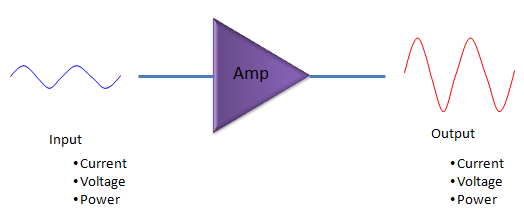
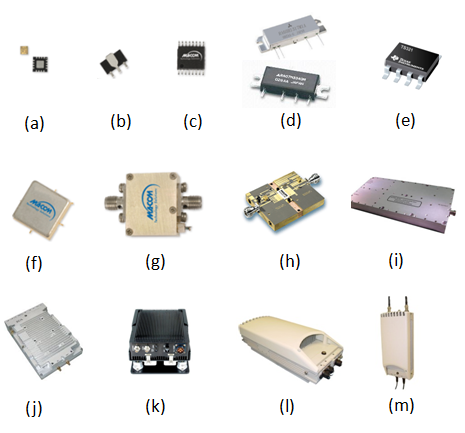
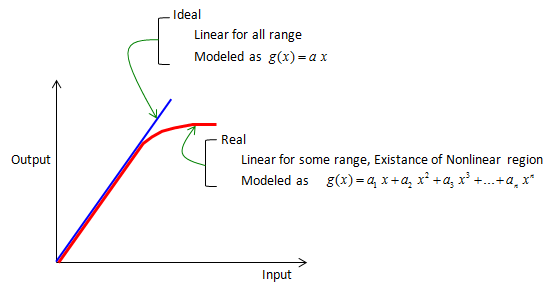
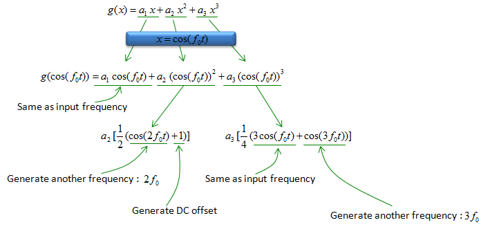
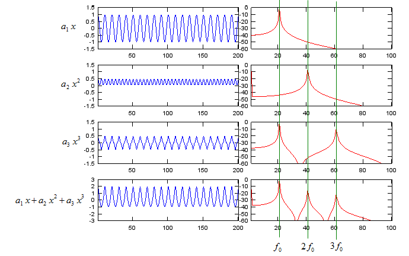
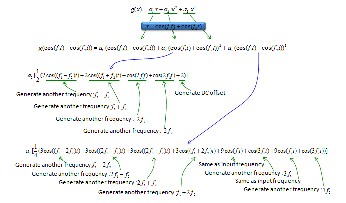
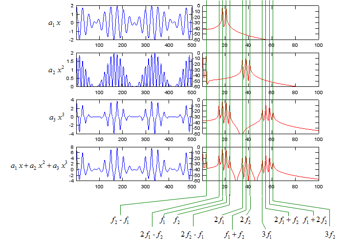
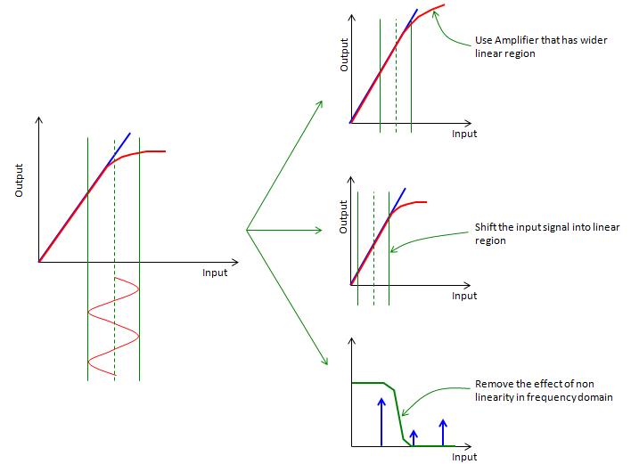
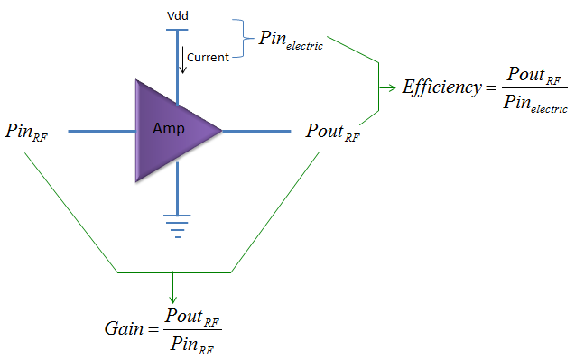

|
RF - Amplifier Home : www.sharetechnote.com |
|
Amplifier is a device which turn 'something' small into 'something' larger. It is like a magnfying glass. What does this amplify ? it normally amplify (magnify) current or voltage or power as shown below.

Types of RF Power Amplifier
These days it seems to get harder and harder to find applications/products which is using amplifiers as a separate component (discrete component) and as a result I found it difficult to find engineers who has such an experiences of dealing with discrete amplifier. In most product especially mobile communication product (e.g, mobile phone, smartphone), most of the amplifiers (especially reciever chain amplifiers) are integrated into various RF ICs. One of few cases, you still see a discrete amplifier (like (a)~(e)) would be final stage power amplifier of transmitter chain. The reason why you cannot integrate this power amplifier into RF IC is that it is generating so much heat. In some other applications where you can still see discrete amplifier (or a module in which a couple of discrete amplifiers are the main component like (f)~(k)) would be a system which requires very high power transmission (e.g, telecommunication repeater, various base station for mobile communication system). Very recently even such a high power amplifiers start getting equipped with various control circuit and interface (e.g, eithernet) and can be installed right next to the antenna located on top of high towers (e.g, base station). This kind of amplifier (actually, I can call it an amplifier system) is called Remote Radio Head(e.g, (l),(m)).
g
Ideal vs. Real Amplifier
Ideal function of an amplifier is very simple. If you express the function in the form of mathematical expression, it would look even simpler. The ideal function is to implement some of the simplest mathematical function (f(x) = a x, where a > 1) as expressed in blue straight line in the following graph. However, as I know, as you know, as everybody experienced, nothing goes like theory. In reality, the characteristics of an amplifies goes as shown in red. In this curve, in some section you would see a straight line which is very close to ideal operation, but from some point the behavior deviates from the ideal operation. Mathematically this non-ideal (non linear) curve can be represented in a polynomial as shown below.

Why Non-Linearity is issue ?
Then your question would be "Why these non-linear portion matters ?", "Does it cause any problem ?". This problem can easily explained by simple math that you learned in high school. Let's assume that we have an amplifier which has characteristics of g(x) as shown below and you put a very simple signal represented as cos(f t). By a couple of mathematical steps, you can get the following expression. (if you are not so good at math or too lazy to calculate this as me, just try with Wolfram Alpha). Important thing is not the calculation process (you can always let Software do it). it is more important to understand how to interpret the result. From the result, you would see a couple of different frequencies which does not exists in the input signal (cos(f0 t)). It means that the main problem of non-linearity of the amplifier is that it produces many additional frequencies which we don't like to have.

If you prefer graphical expression to the dry mathematical expression like me, here goes what you like. The first row of the graph shows the ideal operation of the amplifier and the last row shows the result of the amplifier with the second and the third order of polynomials (non linear portion), here you see two additional frequency spikes which does not exists in the input signal. The second and third row shows separate plots for second and third order only for your understanding.

If you put into a composite signal (a signal composed of two frequencies in this example), you would have more complicated result as shown below due to non-linear properties of the amplifier. For sure, I used the software to solve this equation -:), I don't want to spend half an hour pulling my hair this solve this on my own -:). What is the implication of the result ? Simple !!! you got hell lots of additional frequencies that you don't want !!

If I plot the mathematical expression into a graph, I get following result. If you are testing a real amplifier, it is important to figure the exact locations of the spikes in frequency domain which are generated by this non-linearity. If you measure the amplifier characteristics with spectrum analyzer or network analyzer, you will see a lot of other spikes which has not input to the amplifier. Some of the spikes would have been generated by this non linearity and some other spikes would have been generated by other causes. So understanding the effect of this non linear characteristics would help you figure out the source of those unwanted spikes in frequency domain.

If the input signal to Amplifier is very narrow bandwidth or CW signal, you would have to issues as described above by non-linearity of the amplifier. However, you would have more cases where you put modulated wideband signal as the input to the amplifier, in this case the most obvious side effect caused by the non linearity would be poor ACLR/ACPR.
How do we represent the degree of non-linearity ?
Generally speaking, 'Non linear characteristics' is not good in amplifier and these are something that we want to avoid, but never can remove completely. In most case, if there is something that we don't like and try to remove it as much as possible, we make some 'indicator' of those property and put them in the datasheet (specification sheet). As you can guess, we have some indicator in the specification of an amplifier which represents those nonlinear properties of the amplifier. The most common indicators are IP3 (Third order intercept point) and 1 dB compression point.
How can we avoice Non-Linear Effect ?
Now you may have one question as below.
There is no way you can remove this issues completely, but there are various ways to reduce the problem. As far as I understand, there are a couple of common techniques as shown below.
First way you can think of is just to replace one amplifier with another one which has wider linear regions as shown at the top. But it usually require additional cost and in some case those components would not exists at all. Another method is to shift the level of the signal to a little bit lower power region so that it operates in linear region of the amplifier characteristic curve. But this method cannot be applied when the amplitude of the signal is so wide (backoff is large) and there is not much room to shift. Another method is just let the amplifier to produce all those dirty spikes and filter those unwanted spikes with additional filters. This method also requires additional cost and in some case you may find difficulties to find proper filter which can handle such a high power (amplified signal). There is another method which is developed recently and is used in some advanced application. It is a technology called Predistortion. It is smart and advanced technique, but figuring out proper algorithm for predistortion is tricky job.

Gain vs Efficiency
As I mentioned above, amplifier is a device which make a small input signal (energy) a big output signal(energy). It mean the amplifier is supplying high amount of energy to the incoming signal. Then where the amplifier is getting the energy ? It is provided by external energy source marked as 'Vdd' shown below. In case of your mobile phone, this Vdd would be connected to the battery and in a big system like base station, this part will be eventually connected to external power line.
The term Gain represents how much the amplifier magnifies the input signal which means the ratio between input signal and output signal power. The term Efficiency represents with how small energy the amplifier can achieve its desired amplication. For example, when you have to amplifier A and B with the same gain. Amplierfier A achieves that gain with 3 V, 100 mA and B achieves the same gain with 4.2V, 200 mA. You can say Amplifier A is more efficient than the amplifier B. Another way of expressing Efficiency would be "how little energy an amplifier waste in the amplication process". Amplifier with low efficiency means that it waste more engergy during the amplification. Where the wasted engergy would go ? it goes out as heat.

|